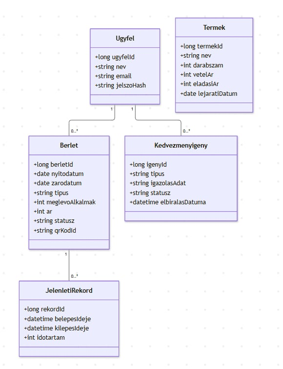
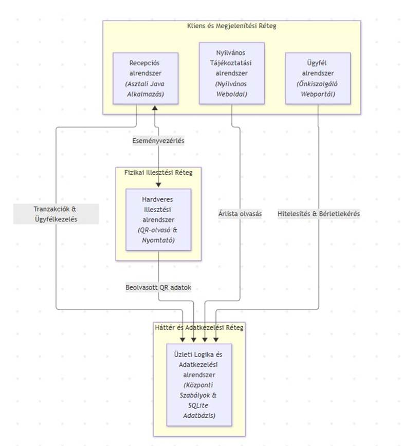
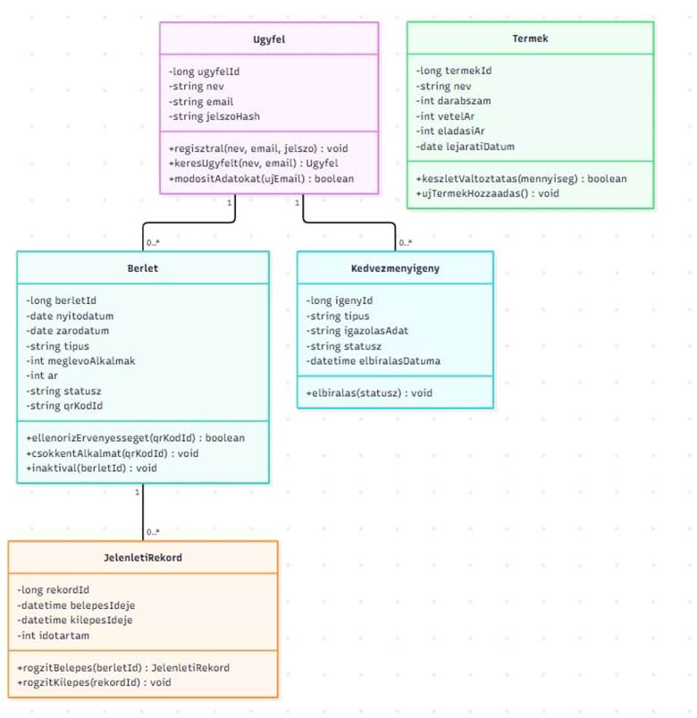
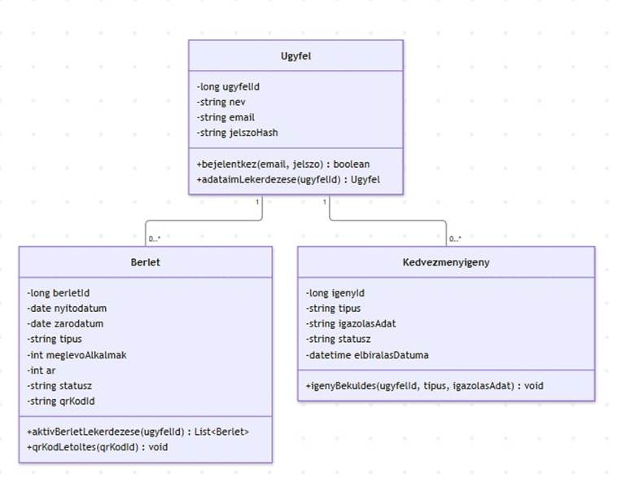
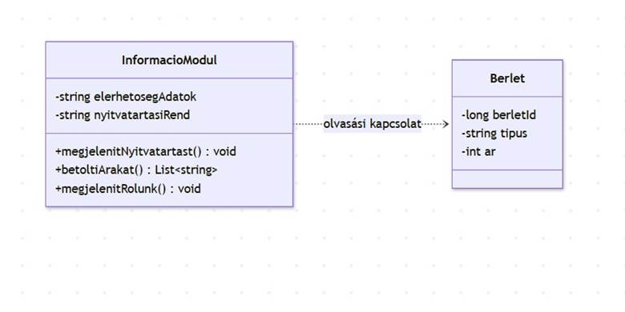
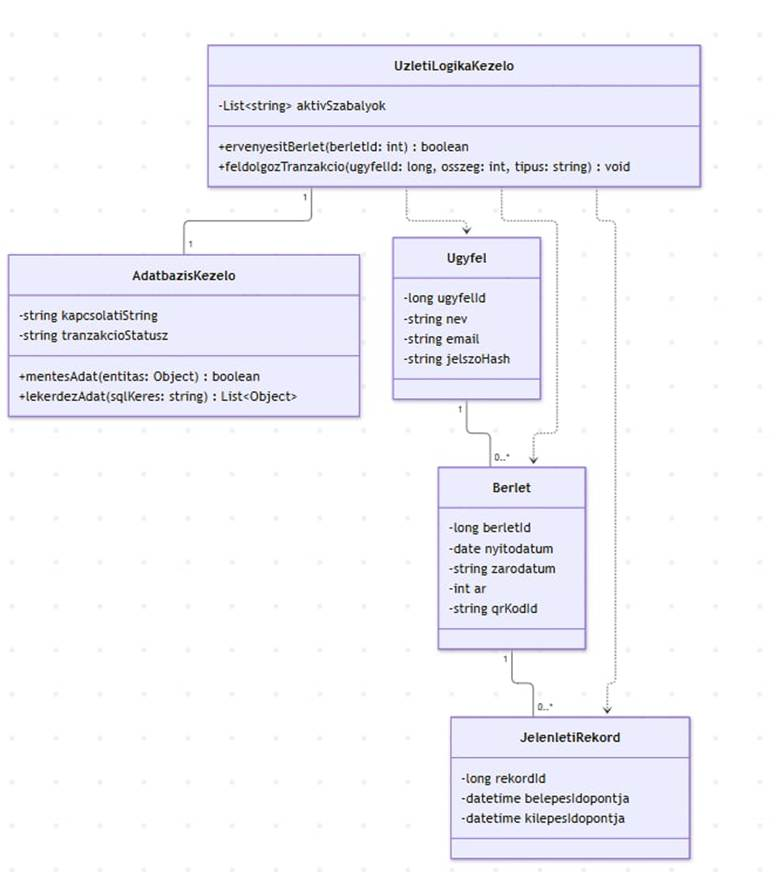
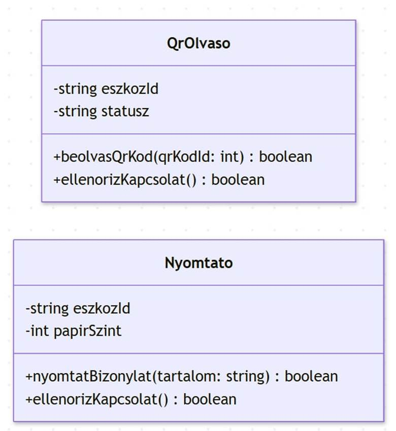

Csoport neve: StepByStep
Feladat sorszáma: H4
Feladat címe: Konditerem bérlet leltár – Analízis modell
Konditerem bérlet leltár – Analízis modell
Gyakorlatvezetõ:
Sátán Ádám
Csoport tagok:
|
Név |
Tankör |
Email cím |
|
Szalados Péter |
2BP2 |
|
|
Vincze Dániel Levente |
2BP1 |
|
|
Jeles Péter József |
2BP1 |
|
|
Pálóczy Makszim |
2BP1 |
|
|
Szilágyi Bálint |
2BI3 |
balszilagyi77@gmail.com |
Történet
|
Dátum |
Verzió |
Leírás |
Szerzõ |
|
2026.10.25 |
1.0 |
A korábbi dokumentumok alapján készült analízis modell |
Szilágyi Bálint |
2.3.3. Nyilvános Tájékoztatási alrendszer
2.3.4. Üzleti Logika és Adatkezelési alrendszer
2.3.5. Hardveres Illesztési alrendszer
3. A Recepciós Alrendszer modellje
3.1.1. Kapcsolatok pontosítása
3.1.2. Attribútumok azonosítása
3.1.3. Reláció osztályok keresése
3.5 Az analízis modell osztálydiagramja
3.6. Az analízis modell osztályainak listája
4. Az Ügyfél Alrendszer modellje
4.5 Az analízis modell osztálydiagramja
4.6. Az analízis modell osztályainak listája
5. A Nyilvános Tájékoztatási Alrendszer modellje
5.5 Az analízis modell osztálydiagramja
5.6 Az analízis modell osztályainak listája
6. Az Üzleti Logika és Adatkezelési Alrendszer modellje
6.1.1. Kapcsolatok pontosítása
6.1.2. Attribútumok azonosítása
6.1.3. Reláció osztályok keresése
6.5. Az analízis modell osztálydiagramja
6.6. Az analízis modell osztályainak listája
7. A Hardveres Illesztési Alrendszer modellje
Ez az analízis dokumentum a „Konditerem bérlet leltár” szoftverrendszer tervezési és elemzési fázisát rögzíti. A dokumentum célja a megrendelõi és felhasználói igények olyan szintû részletezése és strukturálása, amely megalapozza a rendszer objektumorientált tervezését és késõbbi implementációját.
A kifejlesztésre kerülõ rendszer átfogóan támogatja a konditerem napi mûködését: egységes nyilvántartásban kezeli az ügyfeleket, a bérleteket (idõszakos és alkalmi bérletek), a belépési és kilépési eseményeket, a kedvezményigényeket, valamint a recepciós termékleltárt. Az architekturális felépítést tekintve a rendszer egy helyi, Java-alapú asztali recepciós alkalmazásból (amely SQLite adatbázisra támaszkodnak) és egy böngészõbõl elérhetõ nyilvános, illetve ügyféloldali webes felületbõl áll. A dokumentum olvasói a fejlesztõk, a tesztelõk, valamint a konditerem képviselõi.
A fejezet a szoftverrendszer objektumorientált elemzési fázisának keretében azonosítja a problématér (domén) valószínûsíthetõ osztályait, rögzítve azok alapvetõ attribútumait, felelõsségi köreit, valamint az entitások közötti strukturális asszociációkat.

Ügyfél: A konditerem szolgáltatásait igénybe vevõ regisztrált személy adatait tároló osztály, amely felelõs a felhasználói fiók azonosítóinak és hitelesítési adatainak rögzítéséért. Biztosítja a kapcsolatot a személyhez tartozó bérletekhez, látogatási elõzményekhez és benyújtott kedvezményigényekhez.
Bérlet: Az ügyfél belépési jogosultságát leíró és érvényességét nyilvántartó entitás, amely kezel mind idõszakos (pl. havi), mind alkalmi bérletkonstrukciókat. Felelõssége a bérlet státuszának, lejárati dátumának, a fennmaradó alkalmak számának és az egyedi QR-kód azonosítónak a tárolása és ellenõrzése.
Jelenléti Rekord: Az ügyfelek egyes látogatási eseményeit naplózó osztály, amely a beléptetés során jön létre egy érvényes bérlet beolvasásával. Felelõs a belépés és a kilépés pontos idõpontjának, valamint a konditeremben eltöltött idõtartamnak a pontos rögzítéséért és tárolásáért.
Kedvezményigény: Az ügyfelek által az ügyfélportalon keresztül beküldött kedvezménykérelmeket leíró entitás, amely tárolja a kért kedvezmény típusát és az igazoló információkat. Felelõssége a kérelem aktuális elbírálási státuszának (függõben, elfogadva, elutasítva) nyilvántartása a recepciós döntéséig.
Termék: A konditerem recepcióján és büféjében árusított kiegészítõ cikkek adatinak leltározására szolgáló független entitás. Felelõs a termék megnevezésének, az aktuális készletdarabszámnak, a beszerzési és eladási áraknak, valamint a lejárati dátumnak a nyilvántartásáért.
A teljes rendszert funkcionálisan összetartozó osztályokból álló alrendszerekre bontjuk. Az egyes alrendszerek felelõsek a megjelenítésért, a tényleges funkciók („üzleti logika”) végrehajtásáért, illetve az adatkezelésért.

Leírás: A bejelentkezett ügyfelek önkiszolgáló webes felülete, amelyen keresztül megtekinthetik saját fiókadataikat, bérletstatisztikáikat és jelenléti elõzményeiket, valamint kedvezményigényeket nyújthatnak be.
Az alrendszerhez tartozó osztályok:
● Ügyfél
● Bérlet
● Kedvezményigény
Leírás: A helyszíni asztali alkalmazás a recepciós személyzet számára, amely támogatja az ügyfélregisztrációt, a bérletkiállítást, a beléptetés felügyeletét, a kedvezményigények elbírálását és a termékleltár kezelését.
Az alrendszerhez tartozó osztályok:
● Ügyfél
● Bérlet
● Jelenléti Rekord
● Kedvezményigény
● Termék
2.3.3. Nyilvános Tájékoztatási alrendszer
Leírás: A bejelentkezés nélkül elérhetõ weboldali felület, amely a látogatóknak bemutatja a konditerem alapvetõ információit, nyitvatartását, elérhetõségeit, valamint az érvényes bérletárakat. Mivel ez a rész statikus és dinamikus tájékoztató tartalmakat kezel, az árinformációk megjelenítéséhez közvetve kapcsolódik az adatokhoz.
Az alrendszerhez tartozó osztályok:
● Bérlet (kizárólag olvasási / ár-információs szinten)
2.3.4. Üzleti Logika és Adatkezelési alrendszer
Leírás: A rendszer központi magja, amely végrehajtja az összes üzleti szabályt (bérletérvényesség ellenõrzése, alkalomszám-levonás, beléptetési logika), és felelõs az SQLite adatbázisban történõ perzisztens adattárolásért.
Az alrendszerhez tartozó osztályok:
● Ügyfél
● Bérlet
● Jelenléti Rekord
2.3.5. Hardveres Illesztési alrendszer
Leírás: A fizikai külsõ eszközökkel (QR-kód-olvasó és blokknyomtató) való kommunikációt és az eszközök absztrakcióját végzõ alrendszer, amely fogadja a beolvasott kódokat és továbbítja a nyomtatási feladatokat.
Az alrendszerhez tartozó osztályok:
● Bérlet (a QR-kód azonosító kezelése révén)
3. A Recepciós Alrendszer modellje
A Recepciós alrendszer a konditerem helyszíni asztali számítógépén futó Java-alapú alkalmazás, amely a recepción dolgozó személyzet számára biztosít teljes körû felületet a napi operatív teendõk ellátásához. Az alrendszer feladata a helyszíni ügyfélkezelés, a beléptetés felügyelete, a bérlet- és igényléskezelés, valamint a büféleltár karbantartása.
A statikus modell a Recepciós alrendszeren belüli osztályok szerkezetét, azok attribútumait, láthatóságát, valamint az osztályok közötti logikai asszociációkat és multiplicitásokat rögzíti.
3.1.1. Kapcsolatok pontosítása
A Recepciós alrendszeren belüli doménosztályok közötti viszonyok a következõképpen pontosíthatók:
Ügyfél és Bérlet kapcsolat (1 : 0..*): Egy regisztrált ügyfél profiljához az edzõteremben eltöltött ideje alatt tetszõleges számú bérlet (idõszakos vagy alkalmi) kapcsolódhat. Az ügyfél oldaláról 1, a bérlet oldaláról 0..*. Egy bérlet a kiállítása pillanatában szigorúan egyetlen ügyfélhez kötõdik, nem ruházható át.
Bérlet és Jelenléti Rekord kapcsolat (1 : 0..*): Minden beléptetési tranzakció során a rendszer egy új jelenléti rekordot hoz létre, amely a felhasznált bérlethez kapcsolódik. Egy érvényes bérlethez a használat során több látogatási rekord rögzíthetõ (0..*), de minden egyes Jelenléti Rekord pontosan egy konkrét Bérlet entitásra hivatkozik (1).
Ügyfél és Kedvezményigény kapcsolat (1 : 0..*): Az ügyfél kedvezményes bérlet vásárlásához igénylést nyújthat be (pl. diák- vagy nyugdíjas státusz igazolására). Egy ügyfélhez több kedvezményigény is tartozhat a története során (0..*), de egy konkrét igény egyértelmûen egyetlen ügyfélfiókhoz rendelt (1).
Termék entitás autonómiája: A Termék osztály a recepciós leltár- és büfékezelés független entitása. Közvetlen strukturális asszociációval nem kapcsolódik a beléptetési és ügyfél-entitásokhoz, a büféértékesítést és készletnyilvántartást önállóan valósítja meg.
3.1.2. Attribútumok azonosítása
Az alrendszer osztályaihoz tartozó legfontosabb attribútumok és adattípusok:
● Ügyfél: ugyfelId: long, nev: string, email: string, jelszoHash: string
● Bérlet: berletId: long, nyitodatum: date, zarodatum: date, tipus: string, alkalmakSzama: int, meglevoAlkalmak: int, ar: int, statusz: string, qrKodId: string
● Jelenléti Rekord: rekordId: long, belepesIdeje: datetime, kilepesIdeje: datetime, idotartam: int
● Kedvezményigény: igenyId: long, tipus: string, igazolasAdat: string, statusz: string, elbiralasDatuma: datetime
● Termék: termekId: long, nev: string, darabszam: int, vetelAr: int, eladasiAr: int, lejaratiDatum: date
3.1.3. Reláció osztályok keresése
A Recepciós alrendszer logikai vizsgálata során megállapítást nyert, hogy a meglévõ 1:N kapcsolatok (különösen a Bérlet és Jelenléti Rekord közötti adatáramlás) teljes mértékben lefedik a látogatás-nyilvántartási igényeket, így különálló relációsztály bevezetése jelen fázisban nem szükséges; a kapcsolatokat az attribútumok és az idegen kulcsok kezelik.
A dinamikus modell a Recepciós alrendszer futásidejû viselkedését, az állapotátmeneteket és az eseményvezérelt folyamatokat mutatja be.
3.2.1 Zökkenõmentes beléptetési folyamat (QR-kód alapú):
1. A vendég felmutatja a QR-kódot a recepciós pultnál lévõ scannernek.
2. A Hardveres Illesztési alrendszer beolvassa a qrKodId azonosítót, és átadja a Recepciós alrendszernek.
3. A rendszer lekéri a kódhoz tartozó Bérlet entitást, és ellenõrzi annak statusz és zarodatum mezõit.
4. Alkalmi bérlet esetén ellenõrzi, hogy meglevoAlkalmak > 0.
5. Sikeres validáció esetén a meglevoAlkalmak értéke eggyel csökken, létrejön egy új Jelenléti Rekord az aktuális belepesIdeje értékkel, és a zöld jelzés megnyitja a forgókaput.
3.2.2. Bérletkiállítás és kedvezmény-elbírálási folyamat:
1. Az ügyfél a recepción új bérletet kíván vásárolni, és jelzi kedvezményigényét.
2. A recepciós a felületen megkeresi az ügyfél profilját (Ügyfél), majd ellenõrzi a benyújtott igazolványt.
3. A recepciós a Kedvezményigény státuszát "Elfogadva" állapotba állítja.
4. A rendszer az elfogadott kedvezmény alapján kalkulálja a Bérlet ar mezõjét, legenerál egy új egyedi qrKodId-t, beállítja a nyitodatum és zarodatum értékeket, majd elmenti az új Bérlet rekordot.
A funkcionális modell leírja az alrendszeren áthaladó adattranszformációkat és a végrehajtott számítási folyamatokat.
Ügyfél- és bérletkezelési funkciók:
● Új ügyfél adatainak rögzítése és meglévõ ügyféladatok frissítése.
● Bérletértékesítés tranzakciós lebonyolítása, a fizetendõ összeg kiszámítása kedvezmények figyelembevételével.
● Bérlet érvényességének automatikus logikai kiértékelése.
Operatív felügyeleti és leltárfunkciók:
● Az éppen az edzõteremben tartózkodó ügyfelek valós idejû listázása a Jelenléti Rekord adatai alapján.
● Büfétermék értékesítésekor a Termék osztály darabszam attribútumának automatikus levonása, hiány esetén figyelmeztetés generálása.
A recepciós modul osztályaihoz tartozó legfontosabb metódusok:
Ügyfél osztály:
● regisztral(): void – Új ügyfél rekord létrehozása.
● keresUgyfelt(nev: string, email: string): Ugyfel – Ügyfél visszakeresése az adatbázisból.
● modositAdatokat(ujEmail: string): boolean – Elérhetõségek frissítése.
Bérlet osztály:
● ellenorizErvenyesseget(): boolean – Kiértékeli a dátumokat és a megmaradt alkalmakat.
● csokkentAlkalmat(): void – Belépéskor eggyel csökkenti a fennmaradó alkalmakat.
● inaktival(): void – A bérlet státuszát "Lejárt"-ra állítja.
Jelenléti Rekord osztály:
● rogzitBelepes(berletId: long): JelenletiRekord – Létrehozza a belépési bejegyzést.
● rogzitKilepes(rekordId: long): void – Lezárja a látogatási rekordot, kiszámítja az eltöltött idõt.
Kedvezményigény osztály:
● elbiralas(statusz: string): void – Döntés rögzítése a kedvezményre jogosultságról.
Termék osztály:
● keszletValtoztatas(mennyiseg: int): boolean – Módosítja a raktárkészletet eladás vagy feltöltés esetén.
● ujTermekHozzaadas(): void – Új büfécikk rögzítése a leltárban.
3.5 Az analízis modell osztálydiagramja

3.6. Az analízis modell osztályainak listája
3.6.1 Ügyfél
Felelõssége, feladata: Az edzõterem látogatóinak személyes adatainak nyilvántartása, a regisztrációs folyamatok kezelése és a fiókadatok tárolása az alkalmazáson belül.
Együttmûködõk: Bérlet, Kedvezményigény
Attribútumok:
|
Név |
Típus |
Leírás |
|
ugyfelId |
long |
Az ügyfél egyedi azonosítója (Primary Key) |
|
nev |
string |
Az ügyfél teljes neve |
|
|
string |
Az ügyfél email címe |
|
jelszoHash |
string |
A fiók biztonságosan titkosított jelszava |
Operációk:
|
Név |
Argumentumok |
Mûködése, feladata |
|
regisztral |
string nev, string email, string jelszo |
Új ügyfél adatainak rögzítése a rendszerben |
|
keresUgyfelt |
string nev, string email |
Megkeresi és visszahozza az ügyfél adatait |
|
modositAdatokat |
string ujEmail |
Frissíti az ügyfél elérhetõségeit |
3.6.2 Bérlet
Felelõssége, feladata: A bérletkonstrukciók, érvényességi idõk, alkalomszámok és a QR-kód alapú azonosítók kezelése, valamint az érvényesség logikai ellenõrzése.
Együttmûködõk: Ügyfél, Jelenléti Rekord
Attribútumok:
|
Név |
Típus |
Leírás |
|
berletId |
long |
A bérlet egyedi azonosítója (Primary Key) |
|
nyitodatum |
date |
A bérlet érvényességének kezdete |
|
zarodatum |
date |
A bérlet lejárati napja |
|
tipus |
string |
A bérlet konstrukció megnevezése |
|
meglevoAlkalmak |
int |
Hátralevõ napok száma |
|
ar |
date |
A bérlet ára |
|
statusz |
string |
A bérlet aktuális állapota |
|
qrKodId |
int |
A QR-kódos belépéshez tartozó egyedi azonosító |
Operációk:
|
Név |
Argumentumok |
Mûködése, feladata |
|
ellenorizErvenyesseget |
string qrKodId |
Ellenõrzi a megadott QR-kódú bérlet dátumait és hátralévõ alkalmait |
|
csokkentAlkalmat |
string qrKodId |
Csökkenti eggyel a QR-kódhoz tartozó bérlet fennmaradó alkalmainak számát |
|
inaktival |
long berletId |
Lejárt vagy kimerült státuszra állítja a bérletet |
4. Az Ügyfél Alrendszer modellje
Az Ügyfél alrendszer a konditerem rendszerének önkiszolgáló, webes alapú felülete, amelyen keresztül a regisztrált látogatók biztonságosan bejelentkezhetnek a saját fiókjukba. Az alrendszer elsõdleges feladata, hogy transzparens módon biztosítsa a saját bérletstátuszok, a megmaradt alkalmak, a látogatási elõzmények megtekintését, valamint az online kedvezményigények benyújtását anélkül, hogy a recepció személyes közremûködésére lenne szükség.
A statikus modell az Ügyfél alrendszerhez tartozó webes kliens oldali entitások szerkezetét, láthatóságát, attribútumait, valamint az osztályok közötti logikai asszociációkat rögzíti.
4.1.1. Kapcsolatok pontosítása
Az Ügyfél alrendszeren belüli doménosztályok közötti viszonyok a következõképpen pontosíthatók:
Ügyfél és Bérlet kapcsolat (1 : 0..*): Az ügyfél a webes felületen keresztül lekérdezheti a saját bérleteit. Egy ügyfélszámlához a múltbeli és jelenlegi bérletek révén több bérlet tartozhat (0..*), de egy konkrét bérlet egyértelmûen egyetlen ügyfélhez kötõdik (1).
Ügyfél és Kedvezményigény kapcsolat (1 : 0..*): Az ügyfél a fiókjából közvetlenül kezdeményezhet kedvezményes konstrukcióra vonatkozó kérelmet (pl. diákigazolvány feltöltésével). Egy ügyfél többször is benyújthat igénylést (0..*), de egy adott kérelem szigorúan egy ügyfélfiókhoz rendelt (1).
Kapcsolódás a háttérrendszerhez: Az Ügyfél alrendszer (mint webes kliens) nem éri el közvetlenül az adatbázis-táblákat, hanem az Üzleti Logika és Adatkezelési alrendszer szolgáltatásain keresztül hívja le az adatokat.
4.1.2. Attribútumok azonosítása
Az Ügyfél alrendszerhez kapcsolódó legfontosabb doménosztályok attribútumai:
● Ügyfél osztály attribútumai: ugyfelId: long, nev: string, email: string, jelszoHash: string
● Bérlet osztály attribútumai (olvasási nézet): berletId: long, nyitodatum: date, zarodatum: date, tipus: string, meglevoAlkalmak: int, statusz: string
● Kedvezményigény osztály attribútumai: igenyId: long, tipus: string, igazolasAdat: string, statusz: string
4.1.3. Reláció osztályok keresése
Az önkiszolgáló ügyfélfelület logikai vizsgálata során megállapítást nyert, hogy különálló reláció osztály bevezetésére itt sem van szükség, mivel a webes lekérdezések a meglévõ közvetlen 1:N kapcsolatokat használják fel.
A dinamikus modell az Ügyfél alrendszer webes munkafolyamatait és eseményvezérelt lépéseit mutatja be.
4.2.1. Ügyfél bejelentkezés és adatok lekérdezése:
● A felhasználó megadja az e-mail címét és jelszavát a webes felületen.
● Az Üzleti Logika alrendszer hitelesíti az adatok helyességét (jelszoHash ellenõrzés).
● Sikeres belépés után a felület lekérdezi és megjeleníti az ügyfél aktív bérleteit (Bérlet) és a hátralévõ alkalmakat.
4.2.2. Online kedvezményigény benyújtása:
● Az ügyfél kiválasztja a kedvezmény típusát, és megadja az igazoló adatokat.
● A rendszer létrehoz egy új Kedvezményigény entitást "Függõben" státusszal, amely rögzítésre kerül az adatbázisban a recepciós késõbbi elbírálásáig.
Az Ügyfél alrendszer adatáramlási és feldolgozási folyamatai:
● Biztonságos webes munkamenet (session / token alapú) kezelése.
● Saját bérletstátuszok, érvényesség és hátralévõ alkalmak valós idejû lekérdezése.
● Kedvezménykérelmek elektronikus beküldése és a bírálati státusz nyomon követése.
Az Ügyfél alrendszerhez tartozó osztályok fõbb metódusai:
Ügyfél osztály:
● bejelentkezes(): boolean – Ellenõrzi a hitelesítési adatokat.
● adataimLekerdezese(): Ugyfel – Visszaadja a bejelentkezett ügyfél adatait.
Bérlet osztály:
● aktivBerletLekerdezese(): List<Berlet> – Lekérdezi az ügyfél aktív bérleteit.
● qrKodLetoltes(): void – Letölti a bérletet, hogy offline állapotban is elérhetõ legyen.
Kedvezményigény osztály:
● igenyBekuldes(): void – Elküldi az új kedvezménykérelmet a rendszernek.
4.5 Az analízis modell osztálydiagramja

4.6. Az analízis modell osztályainak listája
4.6.1. Ügyfél
Felelõssége, feladata: A bejelentkezõ ügyfél fiókadatainak kezelése, a hitelesítés lebonyolítása és a saját profiladatok lekérdezése.
Együttmûködõk: Bérlet, Kedvezményigény
Attribútumok:
|
Név |
Típus |
Leírás |
|
ugyfelId |
long |
Az ügyfél egyedi azonosítója (Primary Key) |
|
nev |
string |
Az ügyfél teljes neve |
|
|
string |
Az ügyfél email címe |
|
jelszoHash |
string |
A fiók biztonságosan titkosított jelszava |
Operációk:
|
Név |
Argumentumok |
Mûködése, feladata |
|
bejelentkez |
string email, string jelszo |
Hitelesíti az ügyfelet a megadott e-mail cím és jelszó alapján |
|
adataimLekerdezese |
long ugyfelId |
Lekéri és megjeleníti a bejelentkezett ügyfél személyes fiókadatait |
4.6.2. Bérlet
Felelõssége, feladata: Az ügyfél saját bérleteinek, érvényességi idejének és hátralévõ alkalmainak megjelenítése olvasási módban a webes fiókban.
Együttmûködõk: Ügyfél
Attribútumok:
|
Név |
Típus |
Leírás |
|
berletId |
long |
A bérlet egyedi azonosítója (Primary Key) |
|
nyitodatum |
date |
A bérlet érvényességének kezdete |
|
zarodatum |
date |
A bérlet lejárati napja |
|
tipus |
string |
A bérlet konstrukció megnevezése |
|
meglevoAlkalmak |
int |
A hátralévõ belépési alkalmak száma |
|
ar |
int |
A bérlet ellenértéke Forintban |
|
statusz |
string |
A bérlet aktuális állapota (pl. Aktív, Lejárt) |
|
qrKodId |
string |
A QR-kódos beléptetéshez tartozó egyedi kód |
Operációk:
|
Név |
Argumentumok |
Mûködése, feladata |
|
aktivBerletLekerdezese |
long ugyfelId |
Lekérdezi az adott ügyfélhez tartozó aktív bérleteket és azok adatait |
|
qrKodLetoltes |
qrKodId |
Letölti a QR-kódot, hogy az offline állapotban is elérhetõ legyen |
4.6.3. Kedvezményigény
Felelõssége, feladata: Új kedvezménykérelmek és igazoló adatok online benyújtásának kezelése az ügyfél fiókjából a recepciós elbírálás felé.
Együttmûködõk: Ügyfél
Attribútumok:
|
Név |
Típus |
Leírás |
|
igenyId |
long |
A kérelem egyedi azonosítója |
|
tipus |
string |
A kedvezmény kategóriája |
|
igazolasAdat |
string |
Az igazoló dokumentum adatai |
|
statusz |
string |
A bírálat állapota (Függõben, Elfogadva, Elutasítva) |
|
elbiralasDatuma |
datetime |
A recepciós döntésének idõpontja |
Operációk:
|
Név |
Argumentumok |
Mûködése, feladata |
|
igenyBekuldes |
long ugyfelId, string tipus, string igazolasAdat |
Létrehozza és elküldi az új kedvezménykérelmet a rendszerbe |
5. A Nyilvános Tájékoztatási Alrendszer modellje
A Nyilvános Tájékoztatási alrendszer a konditerem külsõ látogatói és érdeklõdõi számára biztosít bejelentkezés nélkül elérhetõ, nyilvános webes felületet. Az alrendszer elsõdleges feladata az intézmény alapvetõ információs adatainak, elérhetõségeinek, aktuális nyitvatartásának, valamint az érvényes bérletárak és konstrukciók transzparens megjelenítése. Mivel ez a réteg statikus és dinamikus tájékoztató tartalmakat kezel, tranzakciós vagy közvetlen adatbázis-módosító mûveleteket nem hajt végre; az árinformációk megjelenítéséhez kizárólag olvasási módban kapcsolódik a központi adatokhoz.
A statikus modell a nyilvános webes felület megjelenítési komponenseit és azok külsõ adatelérési pontjait rögzíti.
5.1.1. Kapcsolatok pontosítása
A Nyilvános Tájékoztatási alrendszeren belüli viszonyok a következõk szerint alakulnak:
Információs komponens és Bérlet kapcsolat (Olvasási irány): A weboldal árlista modulja lekérdezi az aktuális bérletárakat és konstrukciókat a tájékoztatás céljából. A nyilvános felület olvasási módban hivatkozik a Bérlet adatokra, közvetlen módosítási jogkör nélkül.
5.1.2. Attribútumok azonosítása
InformacioModul osztály attribútumai:
● elerhetosegAdatok: string – A konditerem címe, telefonszáma és e-mail címe.
● nyitvatartasiRend: string – A heti aktuális nyitvatartási idõsávok.
5.1.3. Reláció osztályok keresése
Mivel ez egy kizárólag tájékoztató és olvasási funkciókat ellátó felület, összetett relációsztály bevezetésére nincs szükség.
Látogatói oldal megnyitása:
● A látogató megnyitja a konditerem weboldalát a böngészõjében.
● A rendszer betölti a statikus információs tartalmakkal (nyitvatartás, elérhetõségek) ellátott felületet.
● Az árlista aloldalon a rendszer lekéri és megjeleníti az érvényes bérletkonstrukciókat.
Nyilvános információk lekérdezésének folyamata:
● A nem bejelentkezett látogató megnyitja az alkalmazás nyilvános információs felületét.
● Az InformacioModul lekéri a friss tájékoztató adatokat (pl. árlista, nyitvatartás) a háttérrendszerbõl.
● A komponens frissíti a nézetet, és megjeleníti a tartalmat a megfelelõ képernyõcímmel (kepernyoCim).
A Nyilvános Tájékoztatási alrendszer feldolgozási folyamatai:
● Az intézmény alapvetõ adatainak és elérhetõségeinek statikus renderelése.
● Az aktuális bérletárak és akciós csomagok nyilvános listázása.
● Szakmai cikkek, blogbejegyzések és edzéstervek közzététele a látogatóknak.
InformacioModul osztály:
● megjelenitNyitvatartast(): void – Kiírja az aktuális nyitvatartási idõket.
● betoltiArakat(): List<String> – Lekérdezi és listázza a nyilvános bérletárakat.
● megjelenitRolunk(): void – Betölti a konditerem bemutatkozó felületét.
5.5 Az analízis modell osztálydiagramja

5.6 Az analízis modell osztályainak listája
5.6.1. Információ Modul
felelõssége, feladata: A weboldal statikus és információs tartalmainak, elérhetõségeinek, valamint a nyilvános bérletáraknak a megjelenítése a bejelentkezés nélkül érkezõ látogatók számára.
együttmûködõk: Bérlet (olvasási kapcsolat)
Attribútumok:
|
Név |
Típus |
Leírás |
|
elerhetosegAdatok |
string |
Az edzõterem címe, telefonszáma és e-mail címe |
|
nyitvatartasiRend |
string |
A heti aktuális nyitvatartási idõsávok |
Operációk:
|
Név |
Argumentumok |
Mûködése, feladata |
|
megjelenitNyitvatartast |
- datum: Date (Opcionális) |
Megjeleníti a látogatóknak az aktuális nyitvatartási rendet |
|
betoltiArakat |
- kategoria: String (Opcionális) |
Lekéri és listázza az érvényes bérletárakat a nyilvános árlista felületen |
|
megjelenitRolunk |
- |
Betölti és megjeleníti a konditerem bemutatkozó oldalát |
6. Az Üzleti Logika és Adatkezelési Alrendszer modellje
Az Üzleti Logika és Adatkezelési alrendszer felelõs a rendszer központi üzleti szabályainak betartásáért, a tranzakciók feldolgozásáért, valamint az adatbázis-mûveletek (mentés, lekérdezés, módosítás) biztonságos végrehajtásáért. Ez a réteg szolgál háttérszolgáltatásként a többi alrendszer számára, biztosítva az adatok integritását és a rendszer alapvetõ entitásainak (Ügyfél, Bérlet, Jelenléti Rekord) egységes kezelését és perzisztenciáját.
A statikus modell rögzíti a központi adatkezelõ és üzleti logikai komponensek szerkezetét, valamint azok kapcsolatait az adatbázissal és a többi alrendszerrel.
6.1.1. Kapcsolatok pontosítása
Üzleti Komponens és Adatbázis kapcsolat: Az üzleti logika réteg közvetlen írási-olvasási kapcsolatban áll a perzisztens adatbázis-táblákkal. 1-1 kapcsolat áll fenn a központi adatkezelõ és a tárolóréteg között.
6.1.2. Attribútumok azonosítása
AdatbazisKezelo osztály attribútumai: kapcsolatiString: string – Az adatbázis eléréséhez szükséges csatlakozási paraméterek, tranzakcioStatusz: string – Az aktuális adatbázis-tranzakció állapota.
UzletiLogikaKezelo osztály attribútumai: aktivSzabalyok: List<String> – A bérletérvényesítésre és kedvezményekre vonatkozó aktuális üzleti szabályok.
6.1.3. Reláció osztályok keresése
Központi Adatkezelés: Az alrendszer magában foglalja és kezelésben tartja a rendszer fõ adatait (Ügyfél, Bérlet, Jelenléti Rekord), garantálva a konzisztenciát.
TranzakcióKezelõ reláció: Az adatok módosításakor és a bérletvásárláskor biztosítja az atomi adatbázis-mûveletek végrehajtását.
Központi adatmûvelet végrehajtása:
● Valamelyik alrendszer (pl. Recepciós vagy Ügyfél) kérést küld az üzleti rétegnek (pl. bérlet érvényesítése).
● Az UzletiLogikaKezelo ellenõrzi az üzleti feltételeket (pl. lejárat dátuma, megmaradt alkalmak száma).
● Az AdatbazisKezelo végrehajtja a perzisztens mentést vagy lekérdezést, majd visszatérési értékkel tér vissza.
Az Üzleti Logika és Adatkezelési alrendszer fõbb feldolgozási folyamatai: az Ügyfél, Bérlet és Jelenléti Rekord entitások teljes körû CRUD (Create, Read, Update, Delete) mûveleteinek kiszolgálása, belépési jogosultságok és bérletérvényesség validálása a háttérben, valamint kedvezménykérelmek és tranzakciós adatok naplózása.
AdatbazisKezelo osztály: mentesAdat(entitas: Object): boolean – Elmenti vagy frissíti az adott entitást az adatbázisban, lekerdezAdat(sqlKereses: string): List<Object> – Végrehajtja a megadott adatbázis-lekérdezést.
UzletiLogikaKezelo osztály: ervenyesitBerlet(berletId: long): boolean – Ellenõrzi a bérlet érvényességét és alkalmainak számát, feldolgozTranzakcio(): void – Kezeli a pénzügyi és bérletvásárlási folyamatok integritását.
6.5. Az analízis modell osztálydiagramja

6.6. Az analízis modell osztályainak listája
6.6.1. UzletiLogikaKezelo
felelõssége, feladata: A központi üzleti szabályok, validációk, bérletérvényességi számítások és tranzakciós logikák végrehajtása.
együttmûködõk: AdatbazisKezelo, Ügyfél, Bérlet, Jelenléti Rekord
attribútumok:
|
Név |
Típus |
Leírás |
|
aktivSzabalyok |
List<string> |
Az érvényesítési és üzleti szabályok listája |
operációk:
|
Név |
Argumentumok |
Mûködése, feladata |
|
ervenyesitBerlet |
int berletid |
Ellenõrzi a bérlet aktuális státuszát és hátralévõ alkalmait |
|
feldolgozTranzakcio |
long ugyfelId, int osszeg, string tipus |
Lebonyolítja a bérletvásárláshoz vagy módosításhoz kapcsolódó logikát |
6.6.2. AdatbazisKezelo
felelõssége, feladata: Az adatok perzisztens tárolása, lekérdezése, valamint az adatbázis-kapcsolatok és tranzakciók kezelése.
együttmûködõk: UzletiLogikaKezelo
attribútumok:
|
Név |
Típus |
Leírás |
|
kapcsolatiString |
string |
Az adatbázis eléréséhez használt konnekciós paraméterek |
|
tranzakcioStatusz |
string |
Az aktuális adatbázis-mûvelet állapota |
operációk:
|
Név |
Argumentumok |
Mûködése, feladata |
|
mentesAdat |
entitas: Object |
Elmenti vagy frissíti az adatbázisban lévõ rekordot |
|
lekerdezAdat |
string Sqlkeres |
Végrehajtja az SQL lekérdezést és visszaadja az eredményeket |
6.6.3. Ügyfél (Központi Entitás)
felelõssége, feladata: A konditerem regisztrált felhasználóinak adatait és fiókstátuszát tárolja.
együttmûködõk: UzletiLogikaKezelo, Bérlet, Jelenléti Rekord
attribútumok:
|
Név |
Típus |
Leírás |
|
ugyfelId |
long |
Az ügyfél egyedi azonosítója |
|
nev |
string |
Az ügyfél teljes neve |
|
|
string |
Az ügyfél e-mail címe |
|
jelszoHash |
string |
A jelszó titkosított (hashed) értéke |
6.6.4. Bérlet (Központi Entitás)
felelõssége, feladata: Az ügyfelekhez tartozó belépési jogosultságok, alkalmak és érvényességi idõk nyilvántartása.
együttmûködõk: Ügyfél, UzletiLogikaKezelo, Jelenléti Rekord
attribútumok:
|
Név |
Típus |
Leírás |
|
berletid |
long |
A bérlet egyedi azonosítója |
|
nyitodatum |
date |
A bérlet kezdõ érvényességi dátuma |
|
zarodatum |
string |
A bérlet lejárati dátuma |
|
ar |
int |
A bérlet ára |
|
qrKodId |
string |
A mobilalkalmazásban offline is elérhetõ QR-kód azonosítója |
6.6.5. Jelenléti Rekord (Központi Entitás)
felelõssége, feladata: A recepciós kapun történõ belépések és kilépések naplózása.
együttmûködõk: Ügyfél, Bérlet, UzletiLogikaKezelo
attribútumok:
|
Név |
Típus |
Leírás |
|
rekordId |
long |
A jelenléti rekord egyedi azonosítója |
|
belepesIdopontja |
datetime |
A belépés pontos idõpontja |
|
kilepesIdopontja |
datetime |
A kilépés pontos idõpontja (ha releváns) |
7. A Hardveres Illesztési Alrendszer modellje
A Hardveres Illesztési alrendszer felelõs a fizikai eszközök – különösen a beléptetésnél használt QR-kód olvasók és a bizonylat- / vonalkódnyomtatók – integrációjáért, valamint az azokkal történõ kommunikációért. Ez a réteg biztosítja, hogy a külsõ hardvereszközök által begyûjtött adatok (pl. beolvasott kódok) eljussanak a központi üzleti rétegbe, és a vezérlési parancsok megérkezjenek a fizikai eszközökhöz.
A statikus modell rögzíti a hardvereszközöket reprezentáló komponensek szerkezetét és azok kapcsolatait a rendszer többi részével.
7.1.1. Kapcsolatok pontosítása
Hardver és Vezérlés kapcsolat:
Reláció leírása: A hardveres illesztõkomponensek közvetlen kommunikációs kapcsolatban állnak a recepciós és az üzleti logikai réteggel, továbbítva a szkennelési és nyomtatási eseményeket.
Multiplicitás: 1-1 kapcsolat a fizikai eszközkezelõ osztályok és a központi vezérlõk között.
7.1.2. Attribútumok azonosítása
QrOlvaso osztály attribútumai:
● eszkozId: string – A fizikai olvasó egyedi hardverazonosítója.
● statusz: string – Az eszköz aktuális állapota (pl. aktív, hiba, készenlét).
Nyomtato osztály attribútumai:
● eszkozId: string – A nyomtató egyedi azonosítója.
● papirSzint: string – A nyomtatópapír aktuális állapota.
7.1.3. Reláció osztályok keresése
Eszközvezérlés: Biztosítja a perifériák és a szoftveres alrendszerek közötti eseményvezérelt kapcsolatot.
Hardveres esemény feldolgozás folyamata:
● A felhasználó felmutatja a QR-kódot a kapunál.
● A QrOlvaso beolvassa a kódot, majd továbbítja a jelet a rendszernek.
● Az üzleti logika validálja a kódot, és ha szükséges, a Nyomtato bizonylatot vagy jegyet nyomtat.
A Hardveres Illesztési alrendszer fõbb feldolgozási folyamatai:
● QR-kódok olvasása és dekódolása a belépési pontokon.
● Fizikai nyomtatási feladatok kezelése (bérletigazolás, jegy).
● Eszközállapotok ellenõrzése és hibajelzés.
QrOlvaso osztály:
● beolvasQrKod(kodStr: string): boolean – Beolvassa és továbbítja a QR-kód adatait.
● ellenorizKapcsolat(): boolean – Ellenõrzi az olvasó online/offline kommunikációs státuszát.
Nyomtato osztály:
● nyomtatBizonylat(tartalom: string): boolean – Elindítja a fizikai nyomtatási folyamatot.
● ellenorizAllapot(): boolean – Ellenõrzi a nyomtató készenléti állapotát.
7.5. Az analízis modell osztálydiagramja

7.6. Az analízis modell osztályainak listája
7.6.1. QrOlvaso
felelõssége, feladata: A fizikai QR-kód olvasó eszköz vezérlése és a beléptetéshez szükséges kódok beolvasása.
együttmûködõk: UzletiLogikaKezelo, Recepciós alrendszer
attribútumok:
|
Név |
Típus |
Leírás |
|
eszkozid |
string |
Az olvasó egyedi hardverazonosítója |
|
statusz |
string |
Az eszköz aktuális állapota |
operációk:
|
Név |
Argumentumok |
Mûködése, feladata |
|
beolvasQrKod |
int qrKodId |
Beolvassa a QR-kódot és továbbítja validálásra |
|
ellenorizKapcsolat |
- |
Ellenõrzi az eszköz aktuális elérhetõségét és kapcsolatát |
7.6.2. Nyomtato
felelõssége, feladata: A bizonylatok, jegyek és igazolások fizikai nyomtatásáért felelõs hardvereszköz vezérlése.
együttmûködõk: UzletiLogikaKezelo, Recepciós alrendszer
attribútumok:
|
Név |
Típus |
Leírás |
|
eszkozid |
string |
Az nyomtató egyedi hardverazonosítója |
|
papirSzint |
int |
A nyomtatópapír mennyisége |
operációk:
|
Név |
Argumentumok |
Mûködése, feladata |
|
nyomtatBizonylat |
string tartalom |
Elvégzi a szöveges tartalom fizikai nyomtatását |
|
ellenorizKapcsolat |
- |
Ellenõrzi az eszköz aktuális elérhetõségét és kapcsolatát |